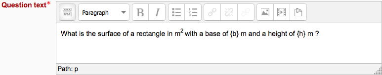
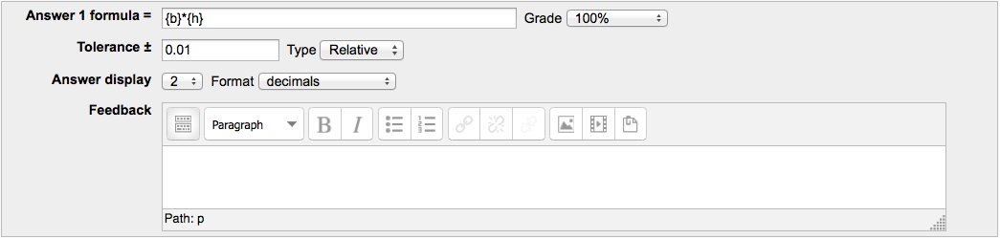
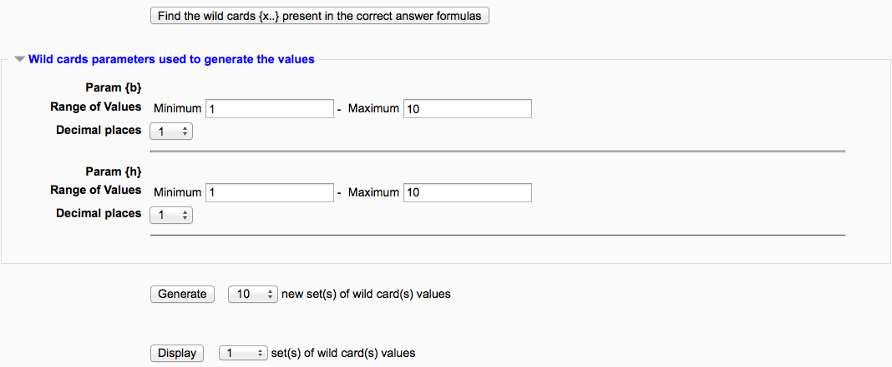
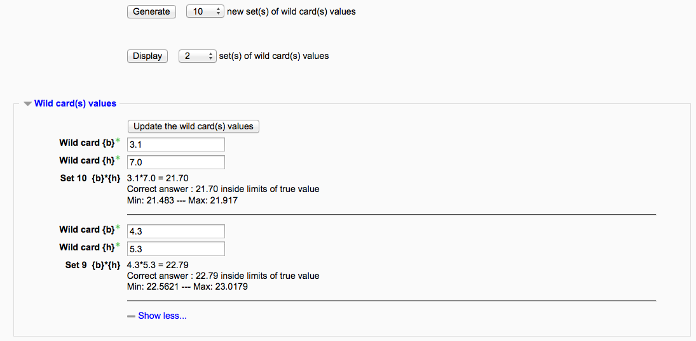
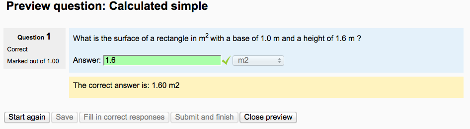

Simple calculated questions offer a way to create individual numerical questions whose response is the result of a numerical formula which contain variable numerical values by the use of wildcards (i.e {x} , {y}) that are substituted with random values when the quiz is taken.
The simple calculated questions offers the most used features of the calculated question with a much simpler creation interface.
As a first example you will create a question asking for the surface of a rectangle. Here are the quick steps we will go over in detail:
- Create the question content with variables shown in {}
- Enter the formula using the variables and set the tolerance
- Determine the range of the generated set of variables that will appear in the question content
- Review the generated set of question contents
- Since it is your first, check your work from a student’s view
Go to the Question bank, select “create a new question” and in the pop-up window select the Simple calculated. The Simple calculated question interface will appear. Give a name to your question in the title.
Fill the question text (note that the {param} names can be chosen at will).
Fill the Correct Answer Formula using the {param} names used in the question text.
You will set the Grade to 100%, as this is the only answer in this question.
Leave the other parameters as they appears ( 0.01 relative means ±1% tolerance).
In simple calculated only the {param} that are in the formula will be used.
In the question text , the {param} that are in the formula will appear with there numerical values i.e 6.7 .
Any other {enclosed text} will appear as is i.e. {enclosed text}.
Click on the button
On reload the two {b} and {h} will be displayed.
Here the {b} range has been set to a 15-20 range and the {h} range has been set to a 5-10 range as we want a rectangle with a larger base than height.
Just to illustrate that you can control the number of values displayed which is useful if you create 100 sets.
Also note the (red) warning that a valid question needs at least one set of {wild card} values. You will not be allowed to save the question if you don’t do the next step.
Note the sets are shown in reverse order so the the number indicates how many sets were created.
The two sets illustrate that the variability defined by the Min and Max values.
Note that the formula result is analyzed and the tolerance limit (here 1% relative) is shown
The correct response that will be shown to the student is also shown.
The 2 decimals where defined are the default values defined as the last parameter under the Correct formula.
Test your first Simple calculated question
On the question bank click on the preview icon.
Enter the result you have calculated yourself or click on the Fill with Correct button. The values should be identical...
Click on the submit button.

- Set the default question grade (i.e. the maximum number of marks for this question).
- Set the Penalty factor (see Penalty factor below).
Correct answer formula syntax for further details.
Choose the grade that the student will get for this question if they give this answer. This should be a percentage of the total marks available. For example, you could give 100% for a correct answer, and 50% for an answer that is nearly right. One of the answers must have a 100% grade.
Determine the tolerance for error that you will accept in the answer. The tolerance and tolerance type settings combine to give a range of acceptable scores. So, if tolerance = t, correct answer = x and the difference between the user’s answer and the correct answer is dx, then the tolerance types are as follows:
- Nominal - mark correct if dx <= t
- Relative - mark correct if dx / x <= t
The next 2 settings, “Correct answer shows” and “Format” determine the precision of the Correct answer shown. They are not used for grading.
Add some feedback which the student will see if they enter this answer.
You can specify as many answer formulae as you like - click “Add another answer blank” to add more.
You can also specify units for the answers. For example, if you enter a unit of ‘cm’ here, and the accepted answer is 15, then the answers ‘15cm’ and ‘15’ are both accepted as correct. If you add more than one unit, you can also specify a multiplier. So, if your main answer was 5500 with unit W, you can also add the unit kW with a multiplier of 0.001. This means that the answers ‘5500’, ‘5500W’ or ‘5.5kW’ would all be marked correct. Note that the accepted error is also multiplied, so an allowed error of 100W would become an error of 0.1kW.
The ‘penalty factor’ only applies when the question is used in a quiz using adaptive mode - i.e. where the student is allowed multiple attempts at a question even within the same attempt at the quiz. If the penalty factor is more than 0, then the student will lose that proportion of the maximum grade upon each successive attempt. For example, if the default question grade is 10, and the penalty factor is 0.2, then each successive attempt after the first one will incur a penalty of 0.2 x 10 = 2 points.
DO NOT PUT THE = sign in the formula
In the recent versions of the calculated question type, you could have more than one answer formula and applied a specific grading value to each of them as long as there is at least one 100% correct answer formula.
If more than one correct answer formula input field are displayed when editing, your site has the multiple answer feature. As a general rule, write these formulas like you would in a calculator e.g. 3 + 5 * sin(3/{x}) A notable exception is exponentiation, where x3 cannot be entered as {x}^3, but instead should be entered as pow(x, 3).
Each function’s placeholders and other arguments should be in parentheses (brackets). For example, if you want students to calculate the sine of one angle and cosine of two times of another angle, you would enter sin({a}) + cos({b}*2).
It’s usually better to have too many parentheses (brackets) than too few. The server won’t care, and the more specific you are about what you mean, the more likely it will like your complex formulas.
There is no implicit multiplication. To you, the human editor, “5(23)” or “5x” may seem perfectly obvious. To the server doing the math, it’s crazy talk and won’t be understood. Always use the “*” for multiplication.
Any special mathematical function must have parentheses around its values. Take the sine function in the first bullet point for instance. Notice that the 3 / x is wrapped in parentheses (brackets)–this is so the server can understand it properly. Without those parentheses, the server won’t know if you mean “(sin 3) / x” or “sin (3 / x)” and will reject the entire formula accordingly.